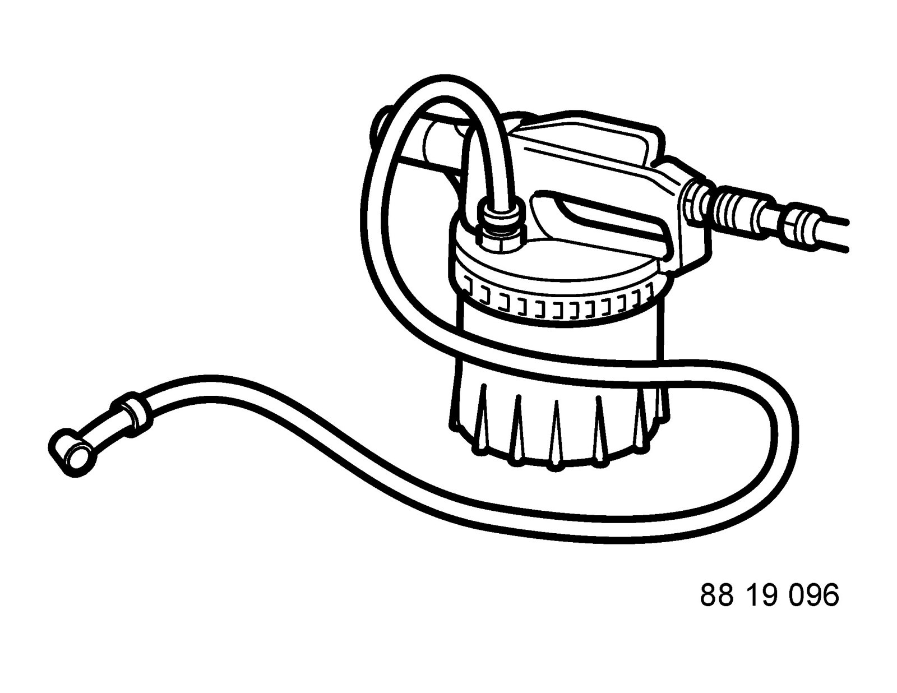
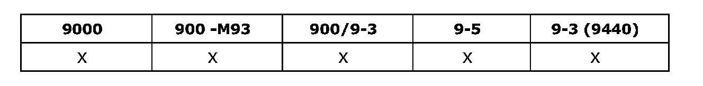

Operation CHARM
: Car repair manuals for everyone.
Home
>>
Saab
>>
2011
>>
9-3 FWD (9440) L4-2.0L Turbo
>>
Repair and Diagnosis
>>
Transmission and Drivetrain
>>
Clutch
>>
Tools and Equipment
>>
88 19 096 Bleeding Equipment
88 19 096 Bleeding Equipment
88 19 096 Bleeding equipment

Bleeding brake and clutch systems
Group: Chassis
